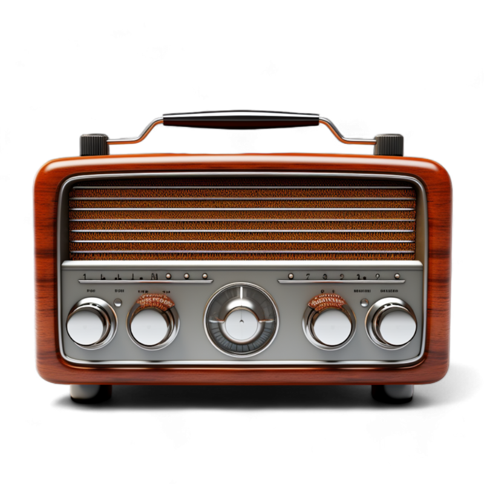
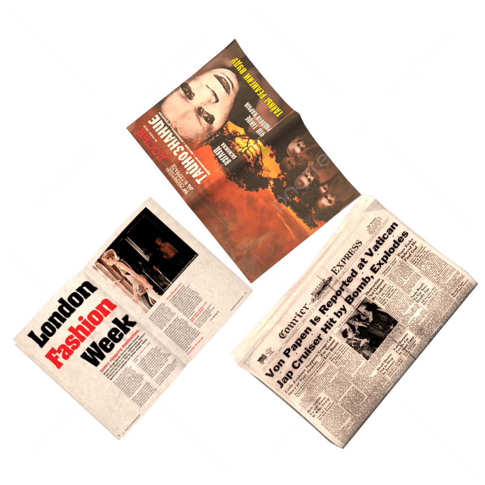
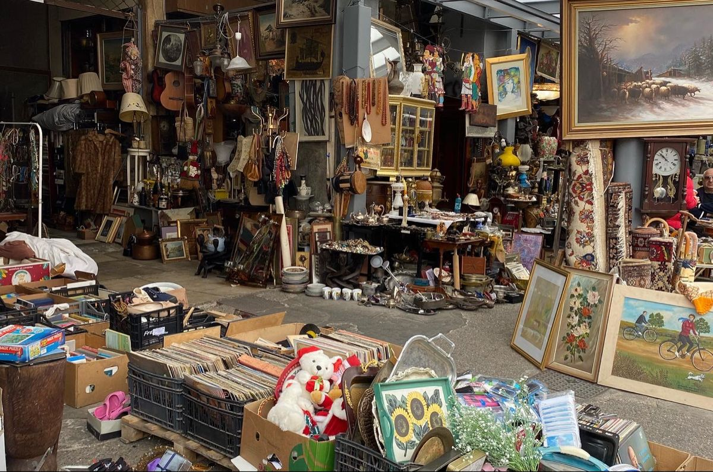

“Todos los objetos parecían haber pertenecido a alguien.”
Radios viejas. Fotografías olvidadas. Vinilos rayados. Cámaras que parecían demasiado pesadas para estar vacías.


El disco seguía girando aunque no hubiera electricidad.
Entre la estática se escuchaba un bolero antiguo.
“Mujer desaparece tras entrar al mercado.”